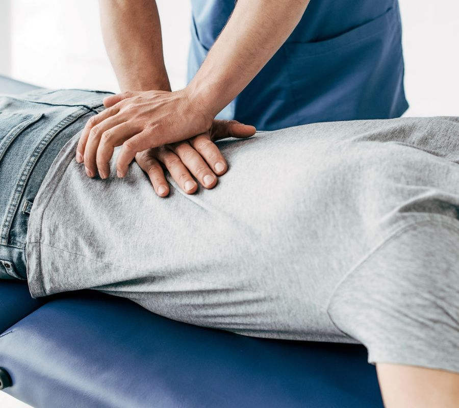
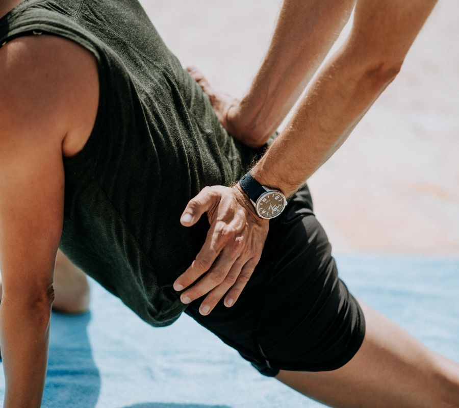

News
Chiropractic Overland Park, Kansas
Chiropractic Overland Park, Kansas
Manual Manipulation
Manual Manipulation
Diversified Technique
Gonstead Technique
Activator Method
Thompson Technique
FlexionDistraction
Extremity Adjusting
Atlas Orthogonal
Sacro Occipital Technique
Cox Technic
About Us
Contact Us
News
Benefits of Chiropractic Care
Chiropractic care is a drug-free, non-invasive form of health care that can help to reduce pain and improve overall wellbeing. (It) has many benefits, including improved range of motion and increased functionality throughout the body!. It also helps with posture, mobility, balance, coordination, and strength.
Posted by
on 2023-07-03
Common Types of Chiropractic Adjustments
Chiropractic adjustments are increasingly popular nowadays for managing pain and discomfort, as well as maintaining overall health.. There're a variety of common types of chiropractic adjustments, each designed to treat different symptoms and ailments. (First up,) the most commonly used type of adjustment is called spinal manipulation, which involves manually adjusting the spine to restore its normal movement and alignment.
Posted by
on 2023-07-03
How to Achieve Optimal Health with Professional Chiropractic Care
Achieving optimal health is an important goal for many people, and professional chiropractic care can help!. It's not just about getting adjustments; with some simple lifestyle changes, you can get the most out of your treatments.
Posted by
on 2023-07-03
How to Choose the Right Chiropractor
Choosing the right chiropractor can be a daunting task.. It's important to (find) select someone who is qualified and experienced, as well as someone with whom you feel comfortable.
Posted by
on 2023-07-03
How to Discover the Benefits of Chiropractic Care
Chiropractic care is a form of healthcare that can offer many benefits!. It focuses on the diagnosis, treatment and prevention of mechanical disorders of the musculoskeletal system.
Posted by
on 2023-07-03
How to Erase Joint Stiffness and Improve Mobility with Chiropractic Care?
Chiropractic care can help you erase joint stiffness and improve mobility!. It is a safe, non-invasive form of treatment which involves manipulating the spine and other joints to reduce pain and discomfort.
Posted by
on 2023-07-03
How to Restore Your Well-Being Naturally with Chiropractic Treatment
Chiropractic treatment is an excellent way to restore your well-being naturally!. It is a great choice if you are looking for an alternative to traditional medicine (or pills).
Posted by
on 2023-07-03
How to Unlock Pain Relief Through Chiropractic Adjustments
Chiropractic adjustments can offer an effective way to unlock pain relief! (Despite what some may believe,) the practice of chiropractic has been around for centuries and is based on the premise that misalignment in the spine can affect other parts of the body.. Through careful manipulation, a chiropractor can help restore balance in your musculoskeletal system and alleviate any discomfort you may be feeling.
To begin, it's important to note that not all chiropractors are created equal; it's essential to find one who is experienced and trustworthy.
Posted by
on 2023-07-03

Natural Alternatives to Pharmaceutical Pain Management Through Chiropractic Care
Chiropractic care offers safe and natural alternatives to pharmaceutical pain management.. Not only does it provide relief from physical discomfort, but it also helps to promote overall health and well-being!
Posted by
on 2023-07-03

The Role of Diet and Exercise in Chiropractic Treatment
Chiropractic treatment is an important part of maintaining a healthy lifestyle.. Diet and exercise play (a) critical role in chiropractic care, allowing individuals to prevent and manage pain naturally.
Posted by
on 2023-07-03
What is Chiropractic? A Proven Solution for Back Pain Relief
Chiropractic is a (proven) solution for back pain relief!. It is an alternative form of healthcare that focuses on the diagnosis and treatment of neuromusculoskeletal system disorders.
Posted by
on 2023-07-03
What is Chiropractic? An Alternative to Traditional Medicine
Chiropractic is an alternative to traditional medicine, which has been around for centuries.. It (is) a form of natural healing that focuses on the alignment of your spine and other joints throughout the body.
Posted by
on 2023-07-03
What is Chiropractic? Discover the Benefits of This Holistic Approach
Chiropractic is a holistic approach to healthcare that focuses on the relationship between the body's structure - specifically the spine - and its functioning.. It uses manual therapies, such as manipulation of joints, to treat and prevent health issues.
Posted by
on 2023-07-03
What is Chiropractic? How it Can Help You Live a Healthier Life
Chiropractic is a type of health care that focuses on the relationship between the body's structure, specifically the spine, and its functioning.. It utilizes manual therapy, such as joint adjustment and manipulation, to correct alignment problems in the musculoskeletal system and to improve one's overall health.
Posted by
on 2023-07-03
What is Chiropractic? The Natural Way to Enhance Your Wellbeing
Chiropractic is an alternative medicine practice that focuses on the diagnosis and treatment of neuromuscular disorders.. It involves manipulating or adjusting the spine to reduce pain, improve function, and enhance wellbeing.
Posted by
on 2023-07-03
Old Posts
New Posts